2008/3/18 腐食したアルミホイールの研磨
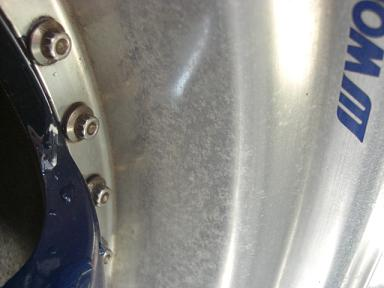 冬の高速道路などでは、凍結防止剤が撒かれます。。 今回は、これを消してピカピカにします。 |
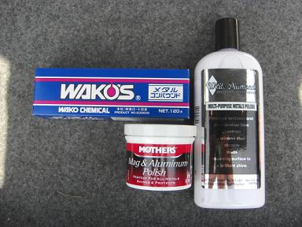 用意したのは、メタルコンパウンド、マグポリッシュ、ホワイトダイヤモンドという研磨剤 |
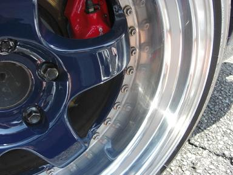 まずは、ワコーズのメタルコンパウンドで磨く。あまり力を入れずにたっぷりと付けて磨いていきます。すると5分もせずにピカピカに＾＾ メタルコンパウンドは、コンパウンドでいうところの粗めなので良く見ると小さな磨き傷が目立ちます。 それを消していくために次の工程へ。 |
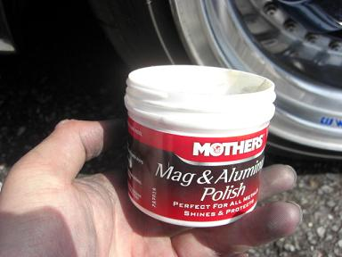 次は、マグポリッシュこれは、コンパウンドでいうところの中め～細めです。 これもあまり力を入れずにたっぷりとつけ数分磨きます。 |
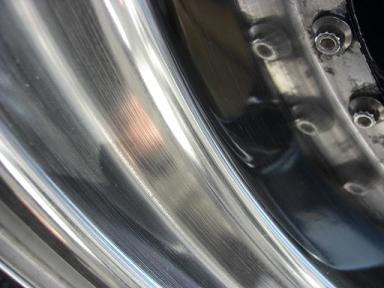 すると、細かい磨き傷はほとんど消えました。 最初の状態からするともう十分 でもさらにピカピカにするべく次の工程へ。 |
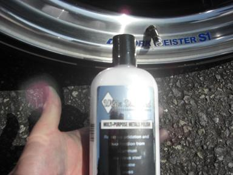 次は、ホワイトダイヤモンドこれは、コンパウンドでいうところの超細めです。 能書きによると、研磨時の摩擦熱で酸化被膜を形成し、腐食を防ぐ効果もあるとか＾＾/ |
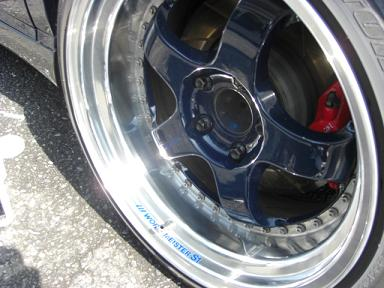 磨き終えたホイール。 効果があるようです＾＾ |
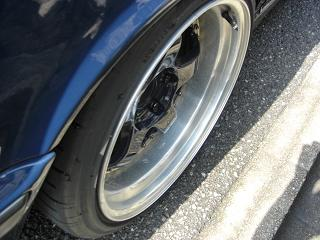 研磨前↓ 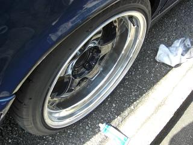 メタルコンパウンド↓ 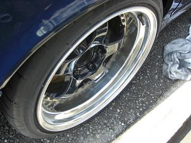 マグポリッシュ↓ 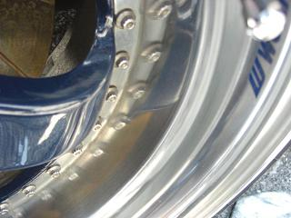 ホワイトダイヤモンド他にタワーバーなども磨いてみたところ同じように効果アリだった。 試してみたい方は、オフミの時などに声かけてください。持っていきます＾＾/ |